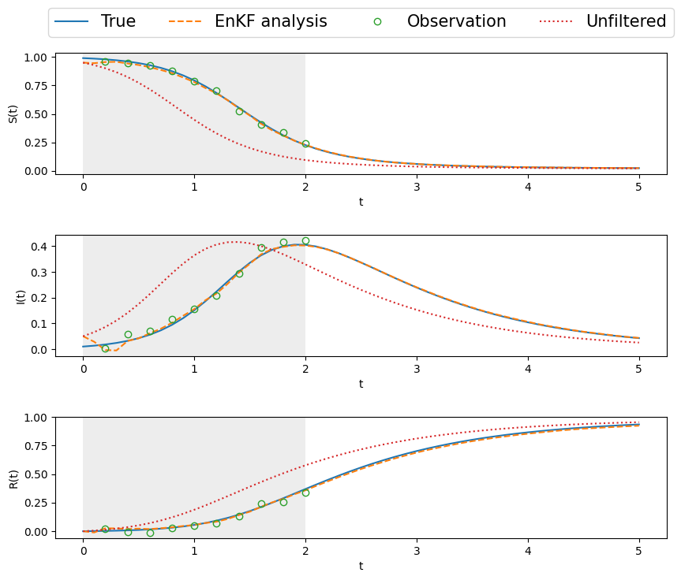

import numpy as np
import matplotlib.pyplot as plt
from scipy import linalg
np.random.seed(7755)
def SIR(state, *args):
"""
Parameters
----------
state: array-like, shape (3,)
Point of interest in three-dimensional space.
*args: (sigma, lambda) : float
Parameters defining the SIR dynamics.
Returns
-------
state_dot : array, shape (3,)
Values of the derivatives at *state*.
"""
beta = args[0]
lambd = args[1]
S, I, R = state # Unpack the state vector
f = np.zeros(3) # Derivatives
f[0] = -beta*S*I
f[1] = beta*S*I - lambd*I
f[2] = lambd*I
return f
def RK4(rhs, state, dt, *args):
k1 = rhs(state, *args)
k2 = rhs(state+k1*dt/2, *args)
k3 = rhs(state+k2*dt/2, *args)
k4 = rhs(state+k3*dt, *args)
new_state = state + (dt/6)*(k1 + 2*k2 + 2*k3 + k4)
return new_state14 Example 3: SIR Model
In this example, apply DA methods applied to an SIR systems of ordinary differential equations. The SIR system is given by
\[\begin{align} \dfrac{dS}{dt} &= - \beta SI, \quad S(0) = S_0, \\ \dfrac{dI}{dt} &= \beta SI - \lambda I, \quad I(0) = I_0, \\ \dfrac{dR}{dt} &= \lambda I, \quad R(0) = R_0, \end{align}\]
where \(S=S(t)\) are susceptibles, \(I=I(t)\) infected and \(R=R(t)\) recovered. The model parameters are \(\beta\) and \(\lambda\) and the famous rate of reproduction is then
\[ R_0 = \frac{\beta}{\gamma} S_0 .\]
# parameters SIR
beta = 4.0
lambd = 1.0
dt = 0.1
tm = 5
nt = int(tm/dt)
t = np.linspace(0,tm,nt+1)
# initialize and solve
u0True = np.array([0.99, 0.01, 0]) # True initial conditions
#time integration
uTrue = np.zeros([nt+1,3])
uTrue[0,:] = u0True
for k in range(nt):
uTrue[k+1,:] = RK4(SIR,uTrue[k,:], dt, beta, lambd)
# Observational model. Lognormal likelihood.
yobs = np.random.lognormal(mean=np.log(uTrue[1::]), sigma=[0.02, 0.02, 0.])
# plot results
fig, ax = plt.subplots(nrows=1,ncols=1, figsize=(8,5))
ax.plot(t,uTrue[:,0], 'r', label='$S(t)$', linewidth = 3)
ax.plot(t,uTrue[:,1], 'g', label='$I(t)$', linewidth = 3)
ax.plot(t,uTrue[:,2], 'b', label='$R(t)$', linewidth = 3)
ax.plot(t[1::], yobs[:,0:2], marker="o", linestyle="none")
ax.grid()
ax.legend()
ax.set_xlabel('t')Text(0.5, 0, 't')
14.1 Ensemble KF for Data Assimilation
Here we will generalize the ensemble Kalman filter to take into account the possibility of sparse observations. This is usually the case in real-life systems, where observations are only available et fixed instants, and hence the filtering can only be applied at these times. Inbetween observations, the system evolves freely (without correction) according to its underlying state equation.
Suppose we have \(N_y\) measurements/observations at an interval of \(\delta t_y.\) This gives measurements for times \(t_0 \le t \le t_m,\) where \(t_m = N_m \delta t_m.\) This can be considered as the assimilation window. The system then evolves freely for \(t > t_m\) until some final forecast window time \(t_f.\) The state, or equation itself is simulated with a smaller \(\delta t\) and for a large number \(N_t\) steps, giving \(t_f = N_t \delta t.\) Usually, for real life systems, we will have
\[ \delta t_m \ge \delta t, \quad N_m \le N_t , \quad t_m \le t_f. \]
For code testing, we make the simplifying (unrealistic) academic assumption that
\[ \delta t_m = \delta t, \quad N_m = N_t, \quad t_f = t_m. \]
This implies the availabilty of measurements at each (and every) time step. Note that in many of the previous examples, this was indeed the case.
def enKF_SIR_setup(dt, T, dt_m, T_m, sig_w, sig_v):
"""
Prepare input (true state and observations) for the stochastic
ensemble filter of the Lorenz63 system.
Parameters:
dt: time step for state evolution
T: time interval for state evolution
dt_m: time interval between 2 measurements (can equal dt for dense observations)
T_m: time interval for observations
sig_w: state noise sd., cov. Q = sig_w**2 x np.eye(3)
sig_v: measurement noise sd., cov. R = sig_v**2 x np.eye(3)
"""
# parameters SIR
beta = 4.0
lambd = 1.0
dim_x = 3
dim_y = 3
# noise covariances
Q = sig_w**2 * np.eye(dim_x)
R = sig_v**2 * np.eye(dim_y)
# measurement operator (identity here)
def H(u):
w = u
return w
# Solve system and generate noisy observations
Nt = int(T/dt) # number of time steps
Nm = int(T_m/dt_m) # number of observations
t = np.linspace(0, Nt, Nt+1) * dt # time vector
ind_m = (np.linspace(int(dt_m/dt),int(T_m/dt),Nm)).astype(int) # obs. indices
t_m = t[ind_m] # measurement time vector
x0True = np.array([0.99, 0.01, 0]) # True initial conditions
sqrt_Q = np.linalg.cholesky(Q) # noise std dev.
sqrt_R = np.linalg.cholesky(R)
# initialize (correctly!)
xTrue = np.zeros([Nt+1, dim_x])
xTrue[0, :] = x0True
y = np.zeros((Nm, dim_y))
km = 0 # index for measurement times
y[0,:] = H(xTrue[0,:]) + sig_v * np.random.randn(dim_y)
for k in range(Nt):
w_k = sqrt_Q @ np.random.randn(dim_x)
xTrue[k+1,:] = RK4(SIR, xTrue[k,:], dt, beta, lambd) #+ w_k
if (km < Nm) and (k+1 == ind_m[km]):
v_k = sqrt_R @ np.random.randn(dim_y)
y[km,:] = H(xTrue[k+1,:]) + v_k
km = km + 1
# plot state and measurements
fig, ax = plt.subplots(nrows=3,ncols=1, figsize=(10,8))
ax = ax.flat
#t = T*dt
for k in range(3):
ax[k].plot(t,xTrue[:,k], label='True', linewidth = 3)
ax[k].plot(t[ind_m],y[:,k], 'o', fillstyle='none', \
label='Observation', markersize = 8, markeredgewidth = 2)
ax[k].set_xlabel('t')
ax[k].axvspan(0, T_m, color='lightgray', alpha=0.4, lw=0)
ax[0].legend(loc="center", bbox_to_anchor=(0.5,1.25),ncol =4,fontsize=15)
ax[0].set_ylabel('S(t)')
ax[1].set_ylabel('I(t)')
ax[2].set_ylabel('R(t)')
fig.subplots_adjust(hspace=0.5)
return Q, R, xTrue, y, ind_m, Nt, NmQ, R, xTrue, y, ind_m, Nt, Nm = enKF_SIR_setup(dt=0.1, T=5, dt_m=0.2, T_m =2, sig_w=0.001, sig_v=0.02)
def enKF_SIR_DA(x0, P0, Q, R, y, ind_m, Nt, Nm, Ne=10):
"""
Run DA of the SIR system using the stochastic
ensemble filter with sparse observations in the DA
window, defined by time index set `ind_m`.
Parameters:
"""
# parameters SIR
beta = 4.0
lambd = 1.0
def Hx(u):
w = u
return w
Nx = x0.shape[-1]
Ny = y.shape[-1]
enkf_m = np.empty((Nt+1, Nx))
enkf_P = np.empty((Nt+1, Nx, Nx))
X = np.empty((Nx, Ne))
Xf = np.empty((Nx, Ne))
HXf = np.empty((Ny, Nx))
X[:,:] = np.tile(x0, (Ne,1)).T + np.linalg.cholesky(P0)@np.random.randn(Nx, Ne) # initial ensemble state
P = P0 # initial state covariance
enkf_m[0, :] = x0
enkf_P[0, :, :] = P0
i_m = 0 # index for measurement times
for i in range(Nt):
# ==== predict/forecast ====
for e in range(Ne):
w_i = np.linalg.cholesky(Q) @ np.random.randn(Nx)#, Ne)
Xf[:,e] = RK4(SIR, X[:,e], dt, beta, lambd) + w_i # predict state ensemble
mX = np.mean(Xf, axis=1) # state ensemble mean
Xfp = Xf - mX[:, None] # state forecast anomaly
P = Xfp @ Xfp.T / (Ne - 1) # predict covariance
# ==== prepare analysis step =====
if (i_m < Nm) and (i+1 == ind_m[i_m]):
HXf = Hx(Xf) # nonlinear observation
mY = np.mean(HXf, axis=1) # observation ensemble mean
HXp = HXf - mY[:, None] # observation anomaly
S = (HXp @ HXp.T)/(Ne - 1) + R # observation covariance
K = linalg.solve(S, HXp @ Xfp.T, assume_a="pos").T / (Ne - 1) # Kalman gain
# === perturb y and compute innovation ====
ypert = y[i_m, :] + (np.linalg.cholesky(R)@np.random.randn(Ny, Ne)).T
d = ypert.T - HXf
# ==== correct/analyze ====
X[:,:] = Xf + K @ d # update state ensemble
mX = np.mean(X[:,:], axis=1)# state analysis ensemble mean
Xap = X[:,:] - mX[:, None] # state analysis anomaly
P = Xap @ Xap.T / ( Ne - 1) # update covariance
i_m = i_m + 1
else:
X[:,:] = Xf # when there is no obs, then state=forecast
# ==== save ====
enkf_m[i+1] = mX # save KF state estimate (mean)
enkf_P[i+1] = P # save KF error estimate (covariance)
return enkf_m, enkf_P# Initialize and run the analysis
sig_w = 0.0015
sig_v = 0.02
Q = sig_w**2 * np.eye(3) #* 1.e-6 # for comparison with DT
R = sig_v**2 * np.eye(3)
x0 = np.array([0.95, 0.05, 0]) # a little off [0.99, 0.01, 0]
sig_vv = 0.1
P0 = np.eye(3) * sig_vv**2 # Initial estimate covariance
Ne = 10
Xa, P = enKF_SIR_DA(x0, P0, Q, R, y, ind_m, Nt, Nm, Ne=10)# Post-process and plot the results
# generate unfiltered state
Xb = np.empty((Nt+1, 3))
Xb[0,:] = x0
for i in range(Nt):
Xb[i+1,:] = RK4(SIR, Xb[i,:], dt, beta, lambd)
# plot state and measurements
t = np.linspace(0, Nt, Nt+1) * dt # time vector
T_m = 2.
fig, ax = plt.subplots(nrows=3,ncols=1, figsize=(10,8))
ax = ax.flat
for k in range(3):
ax[k].plot(t,xTrue[:,k], label='True')#, linewidth = 3)
ax[k].plot(t,Xa[:,k], '--', label='EnKF analysis')#, linewidth = 3)
ax[k].plot(t[ind_m],y[:,k], 'o', fillstyle='none', \
label='Observation')#, markersize = 8, markeredgewidth = 2)
ax[k].plot(t,Xb[:,k], ':', label='Unfiltered')#, linewidth = 3)
ax[k].set_xlabel('t')
ax[k].axvspan(0, T_m, color='lightgray', alpha=0.4, lw=0)
ax[0].legend(loc="center", bbox_to_anchor=(0.5,1.25),ncol =4,fontsize=15)
ax[0].set_ylabel('S(t)')
ax[1].set_ylabel('I(t)')
ax[2].set_ylabel('R(t)')
fig.subplots_adjust(hspace=0.5)
14.2 Conclusion
The ensemble Kalman filter, even with sparse observations and a nonlinear system, does an excellent job of
- tracking within the DA window
- forecasting way beyond the window, whereas the unfiltered/unassimilated, freely evolving system deviates considerably, as is to be expected from the nonlinear SIR system.